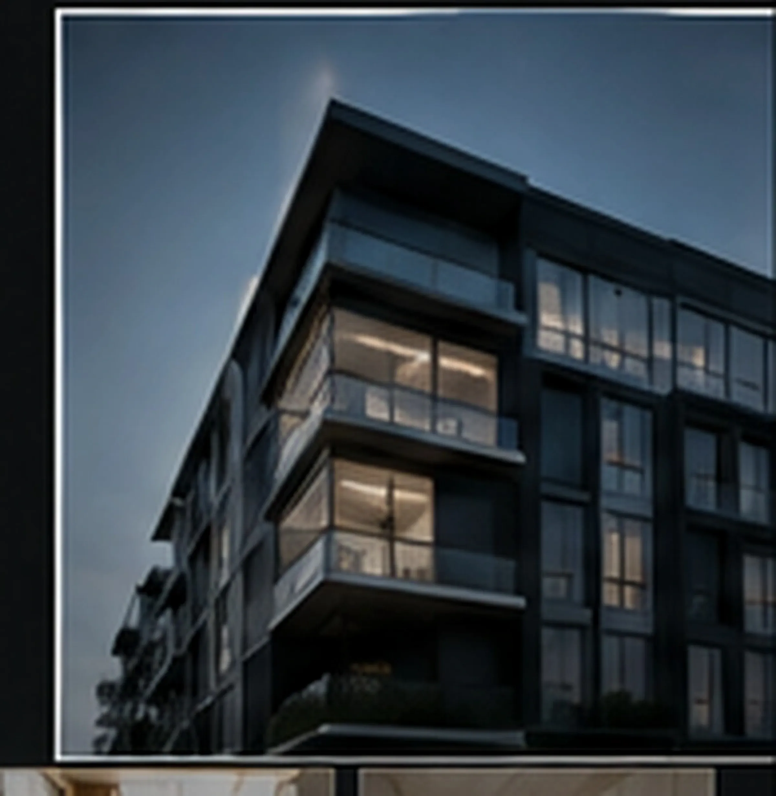
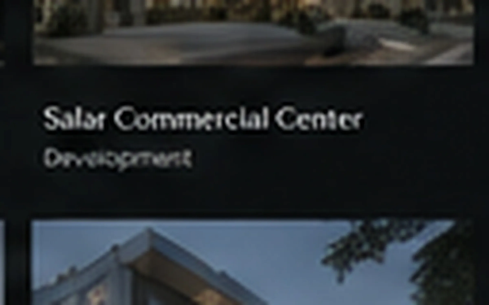
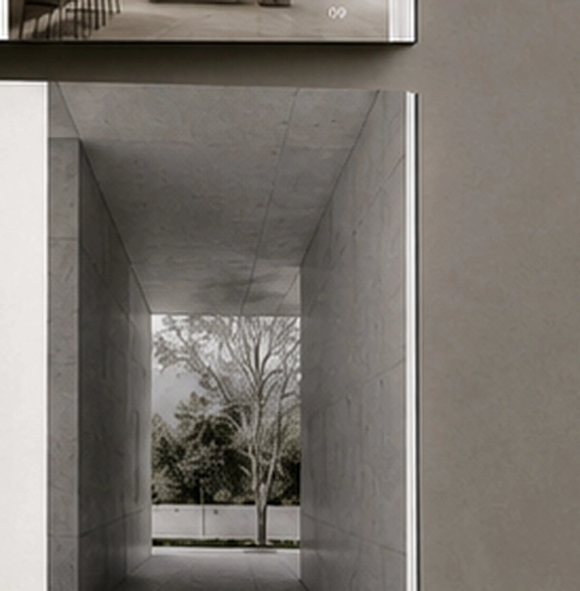
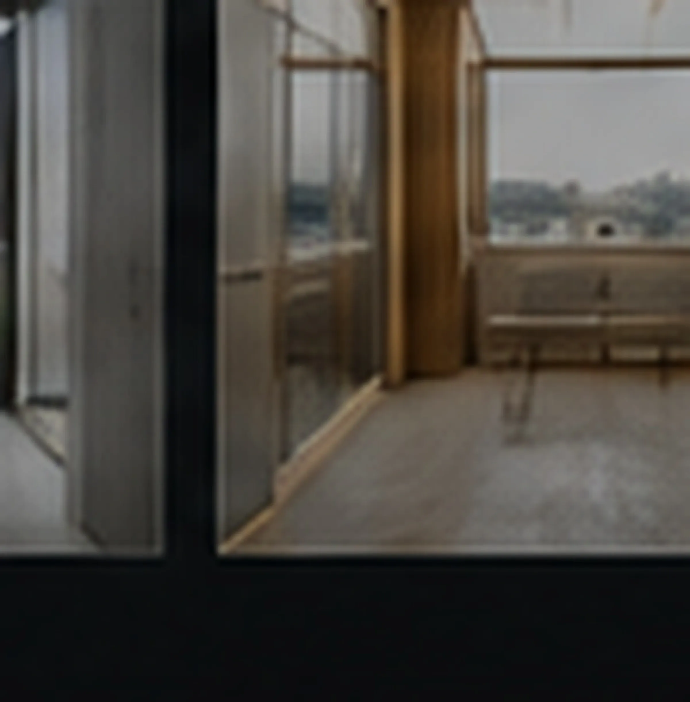

معماری.اجرا.توسعه.
ما طراحی میکنیم با چشمانداز؛ اجرا میکنیم با دقت؛ و پروژه را با نگاه به ارزش بلندمدت توسعه میدهیم.
ساختن با هدف و دقت.
آرنو یک مجموعه چندرشتهای در معماری، اجرا، مدیریت ساخت، توسعه و آموزش ساختمان است. تمرکز ما اتصال تصمیم طراحی به واقعیت اجرا و اقتصاد پروژه است.
 جزئیات اجرایی — پروژههای آرنو
جزئیات اجرایی — پروژههای آرنو
از تحلیل زمین تا کانسپت، مجوز و جزئیات اجرایی.
اجرای دقیق کارگاهی با کنترل کیفیت مستند.
همراهی در مشارکت ساخت و توسعهی ارزش ملک.
آموزش پروژهمحور اجرای ساختمان.

راهکار یکپارچه برای محیط ساختهشده.
طراحی معماری
از تحلیل زمین و برنامه فیزیکی تا کانسپت، فاز یک و دو، نما و طراحی داخلی.
 02
02اجرا و مدیریت ساخت
مدیریت پیمان، برنامهریزی، تدارکات، کنترل کیفیت و تحویل مستند.

03مجری ذیصلاح
ساختار اجرایی و مسئولیتپذیری فنی در چارچوب مجوزهای معتبر پروژه.
 04
04کنترل و نظارت پروژه
کنترل روند اجرا، نقاط بازرسی، گزارشهای QC و پیگیری اصلاحات.
 05
05مشارکت در ساخت
امکانسنجی، سناریوی اقتصادی، ساختار همکاری و توسعه ارزش ملک.
 06
06بازسازی
بازطراحی، برآورد، هماهنگی تأسیسات، خرید و اجرای یکپارچه.

07خدمات مهندسی
نقشهبرداری، هماهنگی خدمات آزمایشگاهی، BMS، مدارک و خدمات پروژه.

08آموزش پروژهمحور
آموزش اجرای ساختمان با اتکا به فرآیند واقعی پروژه، چکلیست و کیساستادی.
ما فقط سازه نمیسازیم؛ اعتماد، وضوح تصمیم و ارزش بلندمدت میسازیم.ARNO Engineers Group
دانش از تجربه.
آموزش پروژهمحور اجرای ساختمان برای مهندسان، مالکان و فعالان صنعت؛ با چکلیست، کیساستادی و فرآیند واقعی تصمیمگیری.


از مفهوم تا تحویل.
شناخت
نیاز، اهداف، محدودیتها و مدل پروژه.
طراحی
معماری، هماهنگی و تصمیمهای ساختپذیر.
برنامهریزی
هزینه، زمان، خرید و نقاط کنترل.
اجرا
هماهنگی کارگاه، QC و گزارشدهی.
تحویل
Punch List، مدارک و جمعبندی.
پروژه خوب، نتیجه هماهنگی رشتههاست.
از کانسپت و پلان تا نما و جزئیات اجرایی.
سیستم سازهای ایمن، اقتصادی و قابل اجرا.
هماهنگی مکانیک، برق و لولهکشی در پلانها.
برداشت دقیق زمین و پیادهسازی صحیح پروژه.
آزمون مصالح و کنترل کیفیت در کارگاه.
سیستمهای BMS و اتوماسیون ساختمان.